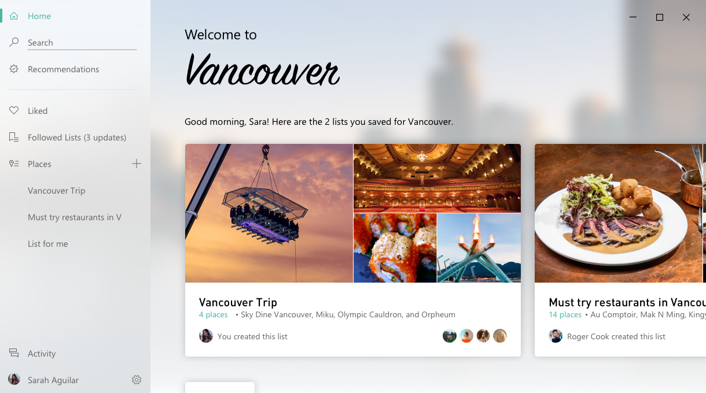
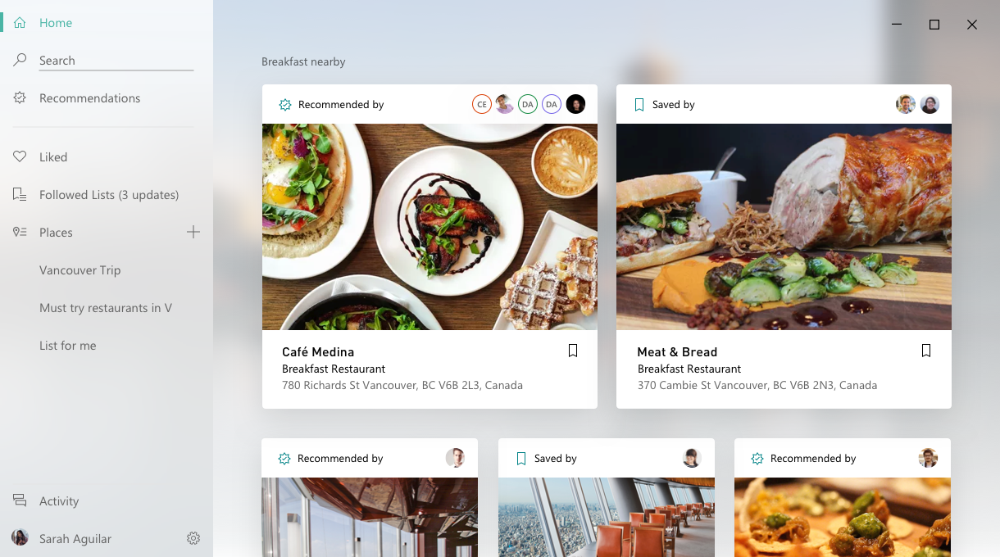
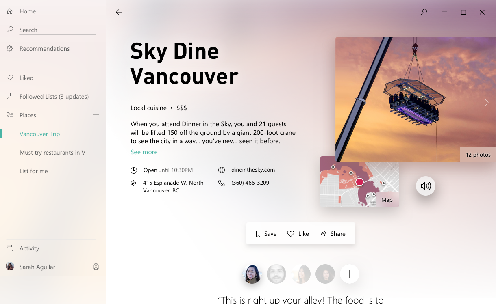

Endeavor is a new location app designed specifically for Windows, aimed at helping Gen-Zs discover new places and plan trips together. At the time I joined the team, Microsoft has just entered the hardware market with its Surface line of products. While the hardware was doing well and generating a lot of interest, market research showed that users perceived Windows as old, hard to use, and not exciting. This perception particularly impacted the sales of the Surface line of products.
To overcome this challenge, Microsoft needed to generate excitement, especially amongst the younger user segments, about Windows and demonstrate its capabilities and features to users. This required a multi-faceted approach that included updating the user experience of the operating system and that of the apps that came with Windows. With Microsoft leaving the mobile business, I knew that we need to focus on creating unique customer value that is hard for the phones to deliver.
As the lead designer on the project, I oversaw every aspect of the app's design, from user research, information architecture, interaction design to visual explorations. I worked closely with my team to ensure that Endeavor would be a seamless, intuitive, and engaging app that would meet the needs of our target audience.
One of the design challenges we faced when developing Endeavor was the need to use low-resolution images from Bing as the background for the app. These low-resolution images were not suitable for use as a background image, as they would appear pixelated and blurry on high-resolution displays, detracting from the overall user experience.
To address this challenge, we came up with an innovative solution: using blurred images as the background. By applying a blur effect to the low-resolution images, we were able to create a background that was visually appealing, while still retaining the original feel and aesthetic of the location.
  It was crucial to create an experience that felt seamless and natural, with smooth animations and transitions between screens. So, the other design challenge we faced was the need to visualize the high dynamic and fluid experience.
To address this challenge, I encouraged the team to learn Framer and create motion prototypes. Framer is a powerful tool that allows designers to create high-fidelity motion studies and interactive prototypes, which can help to visualize complex animations and transitions.